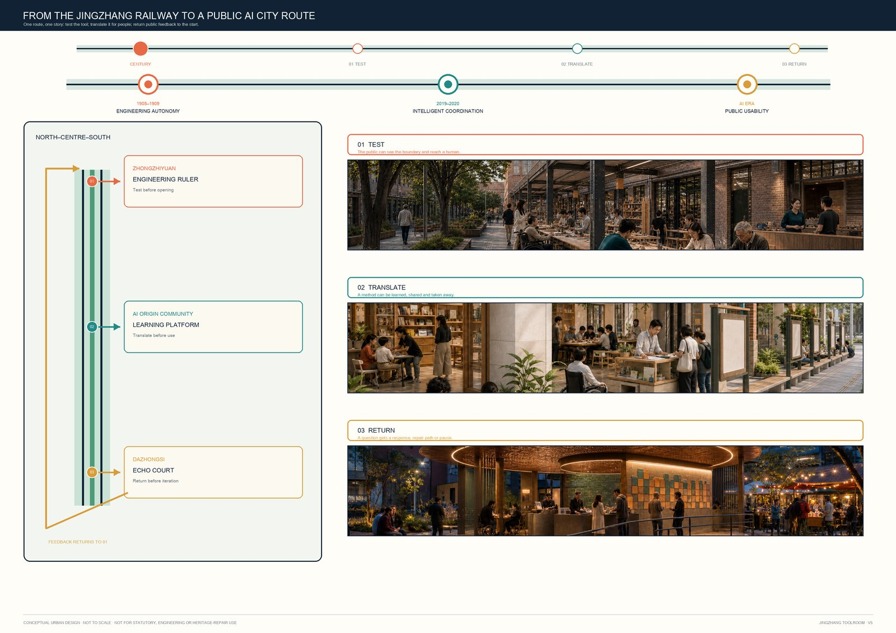
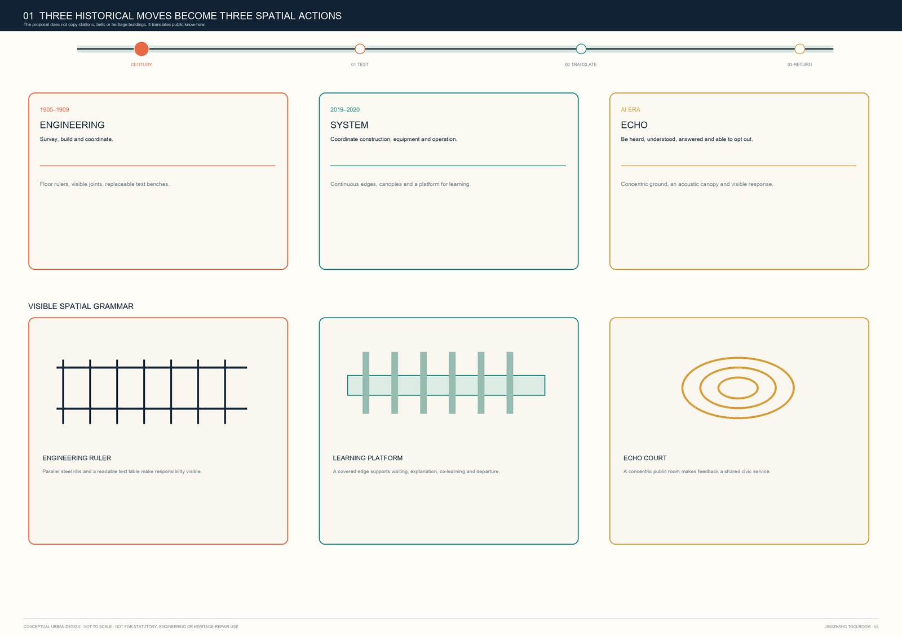
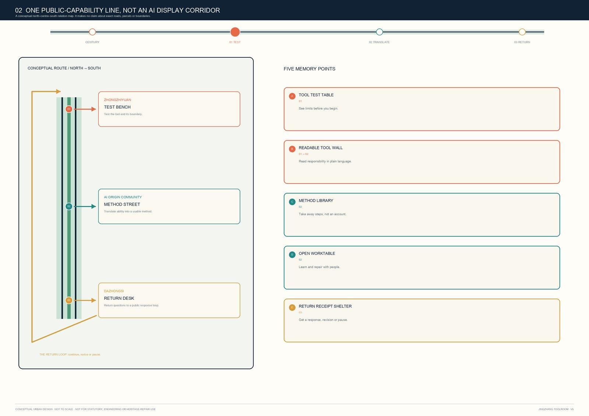
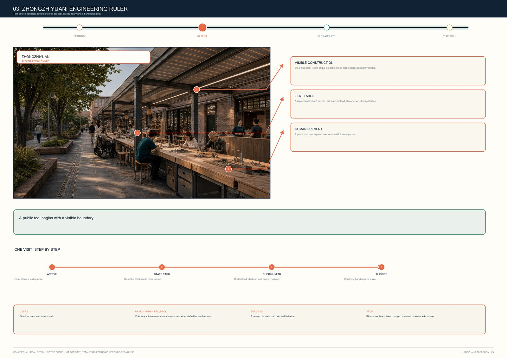
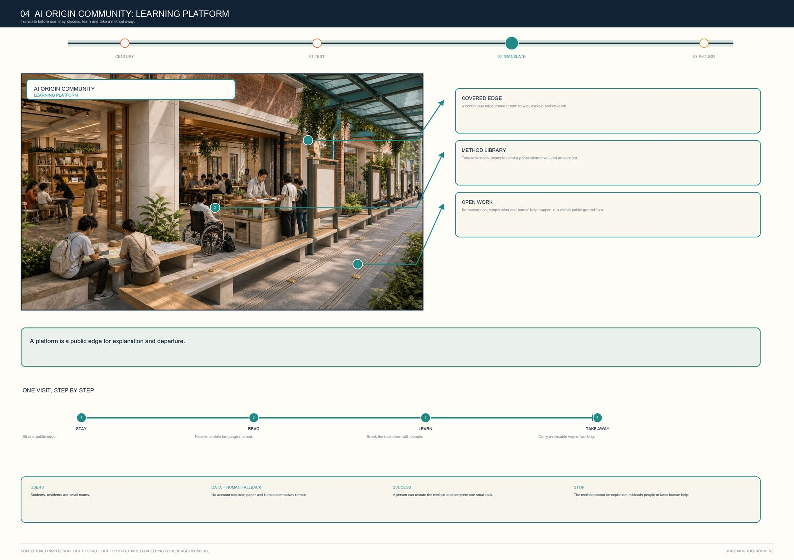
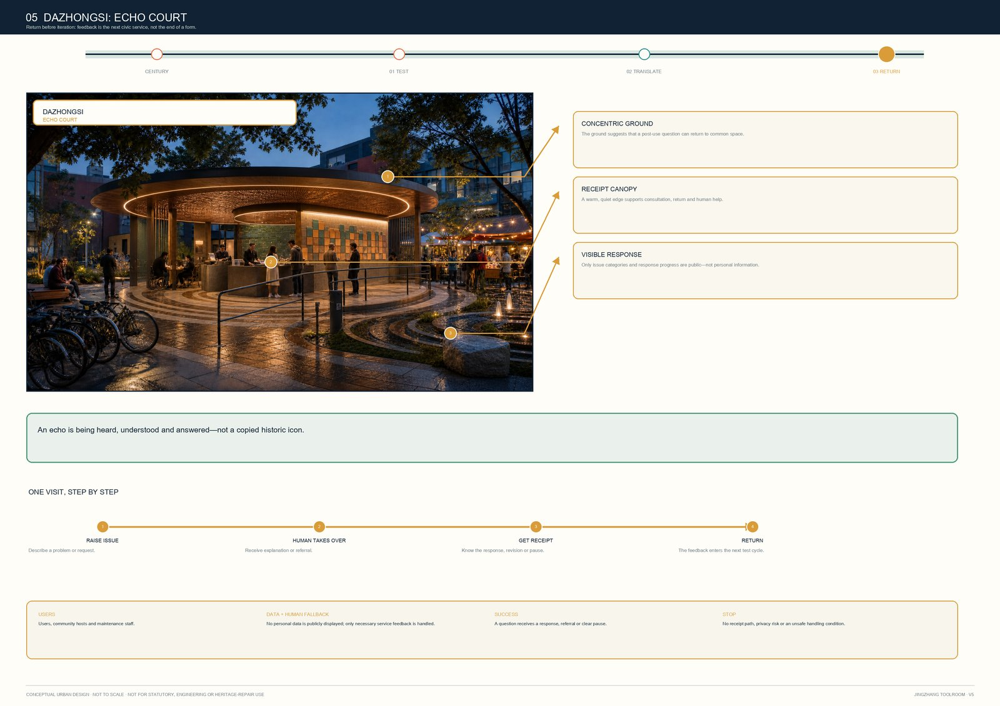
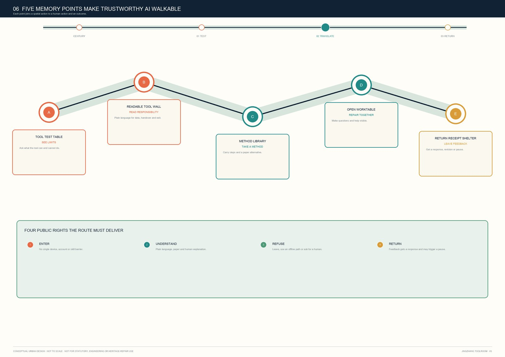
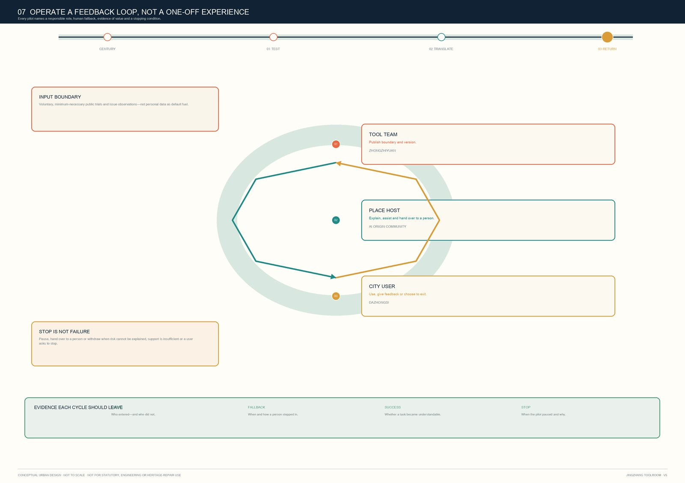

00 Overall narrative board
Historical entry, public-capability route, three scenes and the feedback loop share one reading path.
First test a tool. Then translate it for people. Finally return public feedback to the next round of work.
Download full A3 visual booklet (8-page PDF)11,412,825.386 sqm is recomputed only from the package's official_boundary=false provisional constraint, at medium confidence, for layer-consistency checking; it is not an official site area or statutory basis.
Historical entry, public-capability route, three scenes and the feedback loop share one reading path.

Engineering ruler, learning platform and echo court translate public know-how rather than add symbols.

Three key areas, five memory points and one route returning feedback to the beginning.

People see capability, boundary and human takeover before they begin.

Unfamiliar technology becomes a method people can stay with, understand and take away.

Questions are heard and answered; people may also ask for a pause.

Trustworthy AI becomes a city experience people can enter, understand, refuse and return.

Each pilot names a responsible role, human fallback, success evidence and stopping condition.